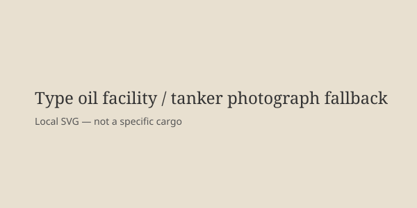

Energy · United States · 9–13 October 2026
Trump announced a Russian diesel-supply arrangement; volumes are small relative to demand and reactions continue.

What is agreed across desks
On 9 October 2026 President Donald Trump posted that he had spoken with Russian President Vladimir Putin and that Russia would immediately supply more than 300,000 metric tons of diesel (approximately 2.25 million barrels) to U.S. and global markets, with an additional 500,000 tons in November and 1 million tons thereafter, plus further volumes dependent on the condition of Russian refineries. The U.S. Treasury issued a temporary general license allowing Russian diesel exports until April. Kremlin statements confirmed Russia’s readiness to supply oil and oil products. U.S. diesel prices had risen sharply; AAA reported a national average near $6.28 a gallon earlier in the week. Ukrainian President Volodymyr Zelenskyy called the arrangement a gift to Putin. European officials expressed concern that the step undercuts sanctions designed to limit Russian revenue for the war in Ukraine. As of 13 October, neither Moscow nor Kyiv had publicly confirmed a mutual energy-infrastructure ceasefire that Trump had also mentioned.
Reuters calculated that 300,000 tons is less than one day of U.S. transport-sector diesel demand (roughly 2.94 million barrels per day). Russian deputy prime minister Alexander Novak later said Russia could return to pre-crisis export volumes of 3.5 million tons per month by year-end, a claim that remains a Russian statement.
What is only a quote
Trump’s assertion that the arrangement would “lower fuel prices” is a prediction. Zelenskyy’s “gift to Putin” is a political characterization. Novak’s volume forecast is a Russian official statement, not an independently verified shipping schedule. Claims that an energy ceasefire is already in effect are Trump’s; Ukrainian reports of continued strikes contradict them.
Mechanism a reader needs
After Russia’s full-scale invasion of Ukraine in 2022, the United States and allies imposed sanctions on Russian energy exports to reduce the revenue available to finance the war. Diesel is a refined product critical to trucking, agriculture, and military logistics. High global diesel prices in 2026 have been linked both to Ukrainian strikes on Russian refineries and to broader supply disruptions. A temporary license reopening Russian diesel to world markets increases potential supply but does not automatically produce physical barrels: many tankers are sanctioned, Russian refineries have been damaged, and logistics take weeks. The announced volumes, even if fully delivered, are small relative to daily U.S. and European demand, so the price effect is limited and delayed.
An “energy ceasefire” would require both sides to stop striking the other’s energy infrastructure. Ukrainian officials have said they were not consulted on any such deal. Continued reports of Russian strikes on Ukrainian energy facilities after Trump’s announcement indicate that, as of mid-October, no verified mutual pause exists. The political context is the U.S. midterm elections on 3 November; fuel prices are a domestic issue. The sanctions architecture, however, was built over years and involves European partners whose own energy security and Ukraine support policies are affected by any unilateral U.S. relaxation.
For readers: one metric ton of diesel is roughly 7.5 barrels. 300,000 tons ≈ 2.25 million barrels. U.S. diesel demand is on the order of 3 million barrels per day. The arithmetic shows why the first tranche cannot move the national price by itself. Tanker availability and refinery output are the binding constraints, not the political announcement.
What this story is not
It is not a confirmed bilateral energy truce. It is not a forecast that diesel prices will fall a specific amount. It is not a photograph of a Russian refinery or a tanker carrying the announced cargo. The image is a generic type photograph of a refinery.

Source articles and scores
| Outlet | Headline | T | N | C |
|---|---|---|---|---|
| Reuters | Explainer: What's in the diesel deal between Putin and Trump? | 97 | 0 | 99 |
| BBC | Trump announces deal for Russian diesel as Zelensky calls it a gift to Putin | 94 | 0 | 95 |
| AP | Trump strikes deal with Putin to get diesel | 95 | 0 | 96 |
Image: Wikimedia Commons type photograph of an oil refinery via Special:FilePath (or equivalent). Caption states it is not a specific cargo or facility. onerror to local SVG. No crossorigin.